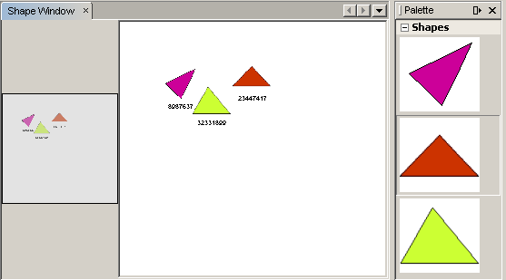

Apache NetBeans
Apache NetBeansLatest release
NetBeans 可视库教程
| This tutorial needs a review. You can open a JIRA issue, or edit it in GitHub following these contribution guidelines. |
由 NetBeans 中文社区的 日月雨林 翻译（2009年 10 月）
在本教程中，您将了解如何使用 NetBeans 可视库 API 提供的主要功能 NetBeans Visual Library API. 这个类库提供了一系列的可重用的组件，叫作 “widgets” 。 你可以通过简单灵活的方式将他们组合到一块创建出可视化的应用。 每一个 widget 都有变量属性， 例如："layout", "border",和 "actions". 库中 预先定义的 widget 都是可以继承拓展的。
所有可插拔的部件都定义为一个 接口 或者 抽象类 ，例如： "WidgetAction", "Anchor", "AnchorShape", "PointShape", "Animator", "Border", "GraphLayout", "LookFeel", "Layout", "SceneLayout", "Router", and "CollisionsCollector"。
归纳起来, Visual Library API 是一个可视化的API , 对于建模和绘图环境中非常的有用。
可选）要解决疑难问题，你可以 下载完整的基于NetBeans6.5 的样例，并查看其源代码。

另请参见 Javalobby 上的 Roman Strobl的可视库截屏视频
设置模块
在本节中，我们将利用向导创建一个模块项目和一个定制窗口组件。
-
选择 “文件→新建项目” (Ctrl+Shift+N). 在向导中选择NetBeans 模块. 在“项目” 下选择“模块” 单击下一步。
-
在“项目名称”和“项目保存位置”面版中, 键入
ShapeSample并将项目位置设置为磁盘上的相应文件夹。选中“独立模块”和“设置为主项目”（如果尚未选中这两个选项）。单击“下一步”。
-
在“代码名称基”中键入
org.netbeans.shapesample，在“模块显示名称”中键入 Shape Sample。单击“完成”。
1.
选择 "生成 XML Layer". 生成的layer.xml文件将和Bundle.properties保存到同一个文件夹下 即： org/netbeans/shapesample 文件夹。 最后点击“完成”。
IDE 创建了 ShapeSample 项目. 项目中包含了所有你所需要的资源和项目元数据，例如项目的 Ant build 脚本。 项目在IDE 中打开，你可以在项目窗口中(Ctrl+1)和文件窗口中 查看 项目的逻辑结构和文件结构(Ctrl+2)。
-
右键单击项目，选择“属性”，单击“项目属性”对话框中的“库”，然后声明与以下 API 的依赖关系：
-
可视库 API
-
实用程序 API
-
单击确定.
-
右键单击模块项目，选择“新建”>“文件/文件夹”，然后从“NetBeans 模块开发”类别中选择“窗口组件”。单击“下一步”。在下拉列表中选择
editor，然后选中“在应用程序启动时打开”。单击“下一步”。
-
在“类名前缀”中键入
Shape。（可选）添加一个尺寸为 16x16 像素的图标。单击“完成”。
将生成多个文件，其中一个为 ShapeTopComponent 。在“设计”模式下打开此文件。您现在应该看到如下所示的内容：

-
在处于“设计”模式下的 TopComponent 中单击鼠标右键，选择“设置布局”，然后选择“边框式布局”。
创建场景
使用可视库 API 进行编程与使用 Swing 进行编程类似。您需要生成并修改一个可视元素树（这些元素称为“小部件”）。树的根由一个 Scene 类表示，该类用于存放此场景的所有可视数据。此场景就是一个小部件。您必须创建一个场景视图，该视图是一个 JComponent。然后，必须将此 JComponent 添加到 JScrollPane 中。
在本节中，我们将在 TopComponent 中添加一个 JScrollPane。然后，创建一个新场景。接下来，将场景视图传递到 TopComponent，以使该视图可以显示在 TopComponent 的 JScrollPane 中。最后，我们将安装模块项目并显示第一个场景。
-
使用组件面板 (Ctrl-Shift-8) 在 TopComponent 上放置一个
JScrollPane。在检查器中，右键单击该JScrollPane，选择“更改变量名称”，然后键入shapePane。
-
在
org.netbeans.shapesample包中，创建一个名为GraphSceneImpl的 Java 类。使该类扩展GraphScene。
此时将出现一条表示错误的红色下划线和一个灯泡。使 IDE 生成 import 语句。
此时将再次出现一条表示错误的红色下划线和一个灯泡。使 IDE 生成该类的抽象方法。
-
通过添加有意义的标识符并在必要处设置返回
null，以使该类的所有要求均得到满足，从而创建该类的伪实现：
public class GraphSceneImpl extends GraphScene {
public GraphSceneImpl() {
}
protected Widget attachNodeWidget(Object node) {
return null;
}
protected Widget attachEdgeWidget(Object edge) {
return null;
}
protected void attachEdgeSourceAnchor(Object edge, Object oldSourceNode, Object newSourceNode) {
}
protected void attachEdgeTargetAnchor(Object edge, Object oldTargetNode, Object newTargetNode) {
}
}-
现在，使用 TopComponent 的构造函数来存放
GraphSceneImpl类的实例。为此，请将下面的代码添加到ShapeTopComponent类的构造函数的末尾：
GraphSceneImpl scene = new GraphSceneImpl();
myView = scene.createView();
shapePane.setViewportView(myView);
add(scene.createSatelliteView(), BorderLayout.WEST);请注意，我们将创建两个视图。第一个是图形或模型等元素的可视化表示的大型视图。第二个是辅助视图，我们将其放在 TopComponent 的 WEST（即左侧）。这样，用户便可以在视图中快速导航并纵览整个场景。
定义 视图 JComponent:
private JComponent myView;-
在重新启动 IDE 时，无需保留 TopComponent。实际上，在本例中执行此操作会导致错误。因此，应将 PERSISTENCE_ALWAYS 更改为 PERSISTENCE_NEVER，如下所示：
public int getPersistenceType() {
return TopComponent.PERSISTENCE_NEVER;
}-
右键选择项目节点，然后选择“运行”
安装此模块后，您会在“窗口”菜单下看到一个新的名为 "Shape" 的菜单项，此菜单项位于菜单项列表的顶部。选择它后，您会看到将打开可视库 API 实现：

为场景创建组件面板
要使用可视库 API 执行一些有用的操作，需要实现 组件 API 以便我们在最后获得一个包含本教程开头所显示的形状的组件面板。之后，我们将添加可视库 API 的拖放功能，以便能够向场景中拖放这些形状。实现此功能后，我们便能够为场景添加其他功能，例如，在场景中缩放和平移的功能。
-
由于本教程所介绍的重点是可视库 API，而不是组件面板 API，因此这里将不对组件面板 API 的工作方式进行说明。目前已提供了有关此主题的许多教程 ( 单击此处). 因此，您只需将下面的文件复制并粘贴到一个名为
org.netbeans.shapesample.palette的新包中：
-
按照本教程前面“入门”一节的步骤 3 中的说明，采用相同的方法添加与操作 API、节点 API 以及通用组件面板 API 的依赖关系。
-
接下来，通过将下面一行代码添加到 TopComponent 构造函数的末尾，以将组件面板添加到 TopComponent 的 Lookup 中：
associateLookup( Lookups.fixed( new Object[] { PaletteSupport.createPalette() } ) );-
IDE 将提示您为
org.openide.util.lookup.Lookups和org.netbeans.shapesample.palette.PaletteSupport插入 import 语句。接受提示并使 IDE 生成 import 语句。
-
将本教程开头的图像放入
org.netbeans.shapesample.palette包中。
“项目”窗口现在应如下所示：

-
再次安装此模块。当从菜单项中打开 TopComponent 时，新的组件面板便会显示在场景的右侧：

当你试着拖放一个 widget 到场景中, 当是什么也没发生，那是因为你需要一个 LayerWidget ，你才可以拖放widgets。 接下来你将很快的学习 到如何操作他
添加 LayerWidget
A LayerWidget 表示 glasspane（类似于 Swing 中的 JGlassPane）。它在缺省情况下是透明的。因此，在继续之前，我们将在场景中添加一个 LayerWidget，以便容纳将拖放到场景中的可视小部件。
-
在
GraphSceneImpl类中，声明 LayerWidget：
private LayerWidget mainLayer;-
在
GraphSceneImpl类的构造函数中，添加 LayerWidget 作为场景的子级：
mainLayer = new LayerWidget (this);
addChild (mainLayer);现在，当将某些项作为小部件从组件面板拖放到场景中时，便会将它们添加为 LayerWidget 的子级。由于 LayerWidget 缺省情况下是透明的，因此可以将多个不同的 LayerWidget 透明地叠加在一起，例如，可以向场景中添加背景图像。
有关详细信息，请参见 Javadoc 中的 LayerWidget in the Javadoc.
通过拖放功能添加 IconNodeWidget
之前，我们使用了 GraphSceneImpl 类的构造函数向 TopComponent 的 JScrollPane 传递场景。到目前为止，该场景存在，但没有任何行为。行为是通过操作添加的。我们在本节使用的操作称为 AcceptAction . 此操作用于实现拖放功能。拖放功能可以应用于小部件，但这里我们将其应用于场景本身。
我们使用 createAcceptAction 指定当将组件面板中的某一项拖到场景中时，应发生的情况。这里需要用到两个方法。第一个方法是 isAcceptable() ，用于确定场景是否接受该项。此时，您可以使用 transferable 测试该项。您还可以设置拖动图像，这就是我们在下面的实现中所执行的操作。如果返回 true ，将调用 accept 方法。这里，我们将使用与前面相同的 helper 方法从 transferable 中获取图像。然后，调用 addNode 方法，以便实例化新的 IconNodeWidget IconNodeWidget，并传递从 transferable 中检索到的图像。
本节中的所有代码都是相互关联的，在添加下面的所有方法之前，您会看到代码中存在表示错误的红色下划线，但我们会尽量按符合逻辑的顺序来添加所有内容！
-
首先，将
createAcceptAction连同它的两个方法添加到GraphSceneImpl类的构造函数中：
getActions().addAction(ActionFactory.createAcceptAction(new AcceptProvider() {
public ConnectorState isAcceptable(Widget widget, Point point, Transferable transferable) {
Image dragImage = getImageFromTransferable(transferable);
JComponent view = getView();
Graphics2D g2 = (Graphics2D) view.getGraphics();
Rectangle visRect = view.getVisibleRect();
view.paintImmediately(visRect.x, visRect.y, visRect.width, visRect.height);
g2.drawImage(dragImage,
AffineTransform.getTranslateInstance(point.getLocation().getX(),
point.getLocation().getY()),
null);
return ConnectorState.ACCEPT;
}
public void accept(Widget widget, Point point, Transferable transferable) {
Image image = getImageFromTransferable(transferable);
Widget w = GraphSceneImpl.this.addNode(new MyNode(image));
w.setPreferredLocation(widget.convertLocalToScene(point));
}
}));*注意: * 添加以上代码后，某些红色下划线将不会消失，这表示仍有错误。导致存在这些错误的原因是，上面的代码引用了尚未创建的方法和类。您将在下面的步骤中创建它们。
-
接下来，在
GraphSceneImpl类中添加一个用于从 transferable 中检索图像的 helper 方法：
private Image getImageFromTransferable(Transferable transferable) {
Object o = null;
try {
o = transferable.getTransferData(DataFlavor.imageFlavor);
} catch (IOException ex) {
ex.printStackTrace();
} catch (UnsupportedFlavorException ex) {
ex.printStackTrace();
}
return o instanceof Image ? (Image) o : ImageUtilities.loadImage("org/netbeans/shapesample/palette/shape1.png");
}*注意: * 如果未成功地从此 helper 方法返回图像，则可以定义任何类型的图像。现在，我们将改用 " shape1.png " 图像。
-
创建一个名为
MyNode的新类。此类用于表示面向图形的模型中的一个节点。它不能直接是图像，因为模型中的每个节点都必须是唯一的（通过 "equals" 方法进行检查）。如果直接使用图像，则场景中只能有 3 个节点（每个图像一个）。但是，如果使用 MyNode 类，则可以有多个节点，并且每个节点都可以有其自己的或共享的图像实例。
public class MyNode {
private Image image;
public MyNode(Image image) {
this.image = image;
}
public Image getImage() {
return image;
}
}-
将
GraphSceneImpl类的签名更改为以下代码，以便可视库实现类接收到该节点：
extends GraphScene<MyNode, String>您必须使 IDE 为抽象方法生成新的桩模块。
此外，由于我们现在采用的是通用内容，因此请确保 IDE 使用 JDK 1.5。如果您不确定是否正在使用 1.6，请右键单击项目，选择“属性”，然后转至“源”页。将“源代码级别”下拉列表更改为 "1.5"。
-
最后，在
GraphSceneImpl类中定义新的小部件。此方法是由accept方法自动调用的。使用它可以定义放置组件面板项后的可视库小部件。
protected Widget attachNodeWidget(MyNode node) {
IconNodeWidget widget = new IconNodeWidget(this);
widget.setImage(node.getImage());
widget.setLabel(Long.toString(node.hashCode()));
widget.getActions().addAction(ActionFactory.createMoveAction());
mainLayer.addChild(widget);
return widget;
}请注意，我们设置了从节点检索的图像。并且，还生成了一个随机数字以用作标签。缺省情况下，该小部件存在，但没有任何行为。这里，我们创建一个移动操作，以便可以在场景中移动该小部件。最后，我们将该小部件作为一个子级添加到在上一节创建的 LayerWidget 中，然后将其返回到场景。
-
重新装入模块并再次打开 Shape 窗口。
现在，可以将组件面板中的项拖放到场景中。当将某一项拖动到场景中时，您会看到拖动图像。当放置某一项时，它会变为一个小部件，并显示在场景以及辅助视图内，如下所示：

向场景添加功能
在上一节中，我们向场景添加了 AcceptAction 并且，还定义了两个方法，一个用于指定是否应放置项目，另一个用于解析项目。在本节中，我们将使用 ZoomAction 向场景添加缩放/取消缩放功能。
-
在
GraphSceneImpl类的构造函数的末尾添加下面一行代码：
getActions().addAction(ActionFactory.createZoomAction());-
再次安装此模块。
-
按住 Ctrl 键的同时使用鼠标滚轮放大和缩小场景：


| 形状是作为图像呈现的。当前不支持 SVG。 |
采用与上述相同的方法，通过添加下面一行代码可以向场景添加平移功能：
getActions().addAction(ActionFactory.createPanAction());添加此代码行后，用户将能够在场景中按住鼠标滚轮朝任意方向滚动。
向 IconNodeWidget添加功能
之前，我们向 IconNodeWidget 添加了 MoveAction ，从而启用了小部件的移动行为。采用相同的方法，还可以向小部件添加许多其他行为。在本节中，我们将添加 HoverAction 、 SelectAction 和 InplaceEditorAction 。
``InplaceEditorAction`` 用于使用户更改标签：

``SelectAction`` 用于当小部件处于选中状态时更改标签的颜色，而 ``HoverAction`` 则用于当鼠标悬停在小部件上时更改标签的颜色：

-
首先，定义将添加到 IconNodeWidget 的编辑器操作：
private WidgetAction editorAction = ActionFactory.createInplaceEditorAction(new LabelTextFieldEditor());-
接下来，定义
LabelTextFieldEditor，如下所示：
private class LabelTextFieldEditor implements TextFieldInplaceEditor {
public boolean isEnabled(Widget widget) {
return true;
}
public String getText(Widget widget) {
return ((LabelWidget) widget).getLabel();
}
public void setText(Widget widget, String text) {
((LabelWidget) widget).setLabel(text);
}
}-
最后，按照之前对移动操作所采用的相同方法，将此编辑器操作分配给 IconNodeWidget：
widget.getLabelWidget().getActions().addAction(editorAction);这里，我们首先获取 IconNodeWidget 的 LabelWidget。然后，将此编辑器操作添加到 LabelWidget。
-
IDE 将提示您添加几条 import 语句。在每种情况下，都接受 IDE 提供的建议。
-
接下来，对于
SelectAction和HoverAction操作，您只需将它们分配给 IconNodeWidget：
widget.getActions().addAction(createSelectAction());
widget.getActions().addAction(createObjectHoverAction());-
然后，您需要考虑所创建的操作的顺序。有关详细信息，请参见相关文档中的 操作顺序一节。重新对操作进行排序后，
attachNodeWidget应如下所示：
protected Widget attachNodeWidget(MyNode node) {
IconNodeWidget widget = new IconNodeWidget(this);
widget.setImage(node.getImage());
widget.setLabel(Long.toString(node.hashCode()));
//double-click, the event is consumed while double-clicking only:
widget.getLabelWidget().getActions().addAction(editorAction);
//single-click, the event is not consumed:
widget.getActions().addAction(createSelectAction());
//mouse-dragged, the event is consumed while mouse is dragged:
widget.getActions().addAction(ActionFactory.createMoveAction());
//mouse-over, the event is consumed while the mouse is over the widget:
widget.getActions().addAction(createObjectHoverAction());
mainLayer.addChild(widget);
return widget;
}-
再次安装并试用此模块。如本节开头所示，当将鼠标悬停在小部件的标签上时，或者选中标签时，标签的颜色将发生改变。此外，单击标签时，还可以编辑其内容。
恭喜，您已学完了可视库 2.0 的第一个教程。.
下一步
有关使用可视库 API 的更多信息，请参见：